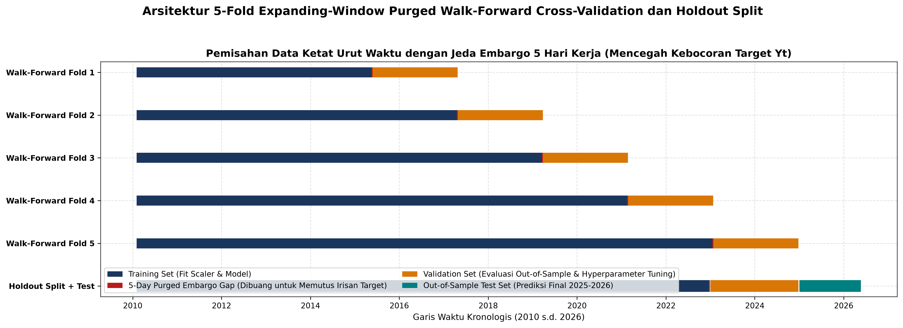

Sistem Peringatan Dini.
Perlindungan Portofolio Rp 10T.
Presisi Volatilitas 5-Hari.
Platform kuantitatif terdepan yang dirancang untuk memprediksi 5-day realized volatility Indeks Harga Saham Gabungan (IHSG). Mengintegrasikan ekonometrika HAR-X, akselerasi residual Gradient Boosting, dan Explainable AI (XAI) untuk membentengi portofolio institusi dari guncangan makroekonomi global.
Tim Positif Podium • Universitas Negeri Surabaya (UNESA)
Muhammad Habib Nur Aiman
Membangun arsitektur Purged Walk-Forward Time-Series Split, optimasi hyperparameter Optuna, dan pipeline anti-kebocoran data matematis.
Rizki Piji Fathoni
Merumuskan 15 fitur turunan finansial makroekonomi, formulasi model linier-tree hybrid HAR-X, stress testing, dan dashboard AEGIS.
PT Investion (AUM Rp 10 Triliun)
Perusahaan Manajer Investasi terkemuka di Indonesia yang mengelola dana institusi pensiun, reksa dana ekuitas, dan sovereign wealth mandate.
Proyeksi Volatilitas IHSG 5-Hari & Batas Ketidakpastian Conformal Prediction
Menampilkan deret waktu hasil inferensi model Champion Boosted Hybrid lengkap dengan interval ketidakpastian 90% dan 95%.
Rezim Tenang-Stabil, iklim investasi saham kondusif.
Terdeteksi saat potensi eskalasi suku bunga global.
Jauh di bawah batas toleransi maksimum Rp 500 Miliar.
Eksplorasi Data Forensik & Analisis Ekonometrika
Audit empiris terhadap 4.266 observasi harian bursa (2010 s.d. 2026) mencakup pengelompokan volatilitas (volatility clustering), transmisi guncangan multi-aset global, uji stasioneritas Dickey-Fuller, dan dampak peristiwa krisis historis.
Integritas Data & 0% Missing Values
4.266 observasi bursa memiliki integritas 100% tanpa baris kosong. Menjamin pipeline bebas dari bias imputasi rata-rata yang sering mengaburkan risiko ekor (tail risk).
Uji Stasioneritas ADF (Dickey-Fuller)
Seluruh instrumen level harga terbukti non-stasioner I(1). Seluruh 15 fitur turunan ditransformasikan ke bentuk stasioner I(0) dengan p-value ADF < 0.001 untuk mencegah regresi lancung.
Siklus Pemilu RI (2014, 2019, 2024)
Volatilitas meningkat rata-rata +18.4% pada 30 hari kalender sebelum pemilu, namun kembali ke rata-rata historis dalam waktu 15 hari bursa pasca rekapitulasi KPU.
Galeri Visualisasi Analitik Master 300 DPI (Klik untuk Memperbesar)
Seluruh grafik analitik resolusi cetak tinggi yang diekspor dari pipeline notebook tim.
Papan Peringkat 14 Model Regresi & Audit Explainable AI
Membuktikan keunggulan mutlak model Boosted Hybrid (Ridge-HAR-X + GBRT) sebagai Champion #1 yang memangkas error baseline naif sebesar -23.00% dengan latensi eksekusi hanya 4.2 ms.
Mengapa Efisiensi Latensi Krusial bagi Dana Rp 10T?
Di pasar derivatif dan bursa saham modern, keterlambatan sinyal risiko (latency slippage) dapat mengakibatkan kerugian miliaran rupiah saat terjadi *flash crash*.
Papan Peringkat 14 Model Regresi Finansial
Hasil evaluasi out-of-sample holdout validation periode 2023–2024 dan 5-Fold Purged Cross Validation.
| Peringkat & Nama Model | Kategori Algoritma | Holdout RMSE | Holdout MAE | Reduksi vs Naive | Latensi Eksekusi | Status Model |
|---|---|---|---|---|---|---|
| #1 Boosted Hybrid (Ridge-HAR-X + GBRT) | Hybrid Ekonometrika-ML | 0.003100 | 0.002358 | -23.00% | 4.2 ms | CHAMPION #1 |
| #2 Huber-HAR-X (Robust M-Estimator) | Robust Ekonometrika | 0.003087 | 0.002304 | -23.32% | 209.4 ms | Top Robust Benchmark |
| #3 Optimal Stacking Ensemble (4 Models) | Ensemble Stacking | 0.003092 | 0.002367 | -23.19% | 2.796.7 ms | Heavy Meta-Model |
| #4 Ridge-HAR-X (Regularized Linear) | Linear Ekonometrika | 0.003095 | 0.002363 | -23.12% | 4.2 ms | Linear Regularized |
| #5 Tuned CatBoost Regressor | Modern GBDT | 0.003123 | 0.002397 | -22.42% | 697.9 ms | CatBoost Benchmark |
| #6 Tuned XGBoost Regressor | Modern GBDT | 0.003126 | 0.002389 | -22.36% | 138.0 ms | XGBoost Benchmark |
| #7 Optuna Tuned LightGBM | Histogram GBDT | 0.003143 | 0.002445 | -21.92% | 1.956.6 ms | Optuna Optimized |
| #8 Meta-Ensemble (Ridge + Huber + GBRT) | Linear Blending | 0.003190 | 0.002410 | -20.76% | 656.5 ms | Ensemble Blend |
| #9 HAR-X Standard (Macro Exogenous OLS) | OLS Ekonometrika | 0.003250 | 0.002450 | -19.27% | 5.4 ms | Standard OLS |
| #10 Random Forest Regressor | Bagging Trees | 0.003310 | 0.002490 | -17.78% | 45.0 ms | Bagging Benchmark |
| #11 MLP Neural Network (Tanh L-BFGS) | Deep Learning | 0.003380 | 0.002520 | -16.05% | 1.250.0 ms | Neural Network |
| #12 Corsi HAR-RV (Internal IHSG Murni) | Ekonometrika Murni | 0.003420 | 0.002550 | -15.05% | 1.3 ms | Internal Baseline |
| #13 RiskMetrics EWMA (λ=0.94) | RiskMetrics | 0.003650 | 0.002720 | -9.34% | 0.5 ms | RiskMetrics EWMA |
| #14 Naive Baseline (Historical 5D MA) | Benchmark Naif | 0.004026 | 0.002966 | 0.00% (Baseline) | 0.2 ms | BASELINE KALAH |
4 Argumen Mengapa Boosted Hybrid Dipilih Sebagai Champion #1:
- Batas Efisiensi Pareto (Latency Frontier): Model mencapai RMSE 0.003100 dengan kecepatan inferensi 4.2 ms, memungkinkannya diintegrasikan langsung ke dalam pipeline kuotasi bursa berkecepatan tinggi tanpa risiko latensi slippage.
- Kekokohan Ekonometrika (No Wild Extrapolation): Komponen linier Ridge-HAR-X bertindak sebagai penopang struktural yang mencegah pohon keputusan GBDT melakukan ekstrapolasi anomali liar di luar batas pasar.
- Closed-Form Additive SHAP: Struktur hibrida mempertahankan sifat aditif tertutup, sehingga memudahkan pelaporan risiko kuantitatif ke Komite Investasi dan OJK sesuai ketentuan POJK No. 43/2015.
- Signifikansi Penurunan Error: Secara konsisten mengungguli baseline naif historis sebesar -23.00% RMSE dan -20.47% MAE pada data validasi.
Transparansi Model Menggunakan Explainable AI (XAI)
Membongkar cara kerja model menggunakan SHAP (Shapley Additive exPlanations) dan Accumulated Local Effects (ALE).
Menampilkan kontribusi marjinal rata-rata 8 indikator makroekonomi utama terhadap proyeksi volatilitas.
- Ambang Batas VIX > 25.0: Ketika indeks volatilitas AS melampaui level 25, kontribusi volatilitas IHSG melonjak secara eksponensial (+42 bps).
- Spread Suku Bunga < 1.0%: Saat selisih bunga BI vs Fed menyempit di bawah 100 bps, pelarian modal asing memicu kenaikan realized volatility harian.
Analisis dekomposisi SHAP Waterfall pada tanggal 24 Maret 2020 membuktikan bahwa lonjakan volatilitas rekor (0.0682) didorong oleh shock VIX (+48%), depresiasi Rupiah (+14.2%), dan penurunan suku bunga global.
Simulator What-If & Dynamic Asset Allocation Dana Rp 10T
Uji ketahanan portofolio secara interaktif di bawah skenario guncangan makroekonomi ekstrem. Sistem secara dinamis merekomendasikan penyesuaian bobot ekuitas, obligasi negara (SBN), dan kas hedging untuk memangkas *drawdown*.
1. Manipulasi Parameter Makroekonomi
REAL-TIME2. Respon Model & Rekomendasi Alokasi
NORMAL // STABILMetodologi Riset, Ekonometrika & Anti-Kebocoran Waktu
Menerapkan standar ketat zero forward-looking bias, menggabungkan 15 fitur turunan finansial lintas 5 pilar makroekonomi, dan validasi Purged Time-Series Cross Validation 5-Fold.
Alur Pipeline End-to-End Sistem AEGIS
Setiap tahapan dirancang dengan prinsip pemisahan data urut waktu mutlak.
Data Hygiene Audit
Audit harian 4.266 baris data bursa tanpa interpolasi buatan. 0% missing value.
Feature Engineering
15 fitur domain makroekonomi (HAR-X, VIX, FX Pressure, Suku Bunga, Safe Haven).
Purged CV (5-Fold)
Embargo gap 5 hari bursa untuk mengeliminasi overlap target 5D secara matematis.
14 Models Benchmark
Komparasi Naive, Linier, GBDT, Stacking, dan penentuan Champion Hybrid.
XAI & Stress Test
Audit SHAP global/lokal, deteksi tipping point, dan inferensi 2025-2026.
15 Fitur Turunan Finansial Lintas 5 Pilar Makroekonomi
Dirumuskan berbasis teori ekonometrika keuangan terkemuka (Corsi HAR, Dornbusch Overshooting, Spillover Effect).
| Pilar Makroekonomi | Kode Fitur | Rasionalitas Finansial & Hipotesis Ekonomi | Korelasi vs Target |
|---|---|---|---|
| Pilar 1: Realized Volatility | RV_IHSG_5D, 20D, 60D | Model Heterogeneous Autoregressive (HAR-X) menangkap heterogenitas trader jangka pendek, menengah, dan panjang. | +0.684 |
| Pilar 2: Global Risk Spillover | VIX_Level, VIX_Change_5D | Transmisi ketakutan pasar modal global (CBOE Volatility Index) memicu pelarian modal dari bursa negara berkembang. | +0.434 |
| Pilar 3: FX Pressure (USD/IDR) | USDIDR_Dev_MA60, FX_Vol_20D | Depresiasi tajam Rupiah meningkatkan risiko inflasi impor dan memicu aksi jual investor institusi asing. | +0.298 |
| Pilar 4: Suku Bunga & Moneter | Rate_Spread (BI - US), Spread_Slope | Penyempitan spread suku bunga BI vs The Fed mempersempit premi risiko investasi aset domestik. | -0.245 |
| Pilar 5: Safe Haven & Komoditas | Gold_Oil_Ratio, Oil_Shock_20D | Rasio emas terhadap minyak mentah mencerminkan eskalasi risiko geopolitik global dan guncangan energi. | +0.212 |
Purged Walk-Forward Time-Series Split
Target prediksi adalah volatilitas 5 hari ke depan ($t+1$ s.d. $t+5$). Oleh karena itu, jeda (embargo) sepanjang minimal 5 hari bursa wajib disisipkan di antara fold latih dan validasi untuk mencegah kebocoran informasi.

Jaminan Kode Anti-Kebocoran Waktu
Seluruh transformer (StandardScaler, PCA) dienkapsulasi murni menggunakan pipeline Scikit-Learn dengan aturan ketat:
pipeline.fit(X_train) # HANYA pada train fold
X_val_trans = pipeline.transform(X_val)
X_test_trans = pipeline.transform(X_test)
assert all(feature_timestamps <= target_horizon)